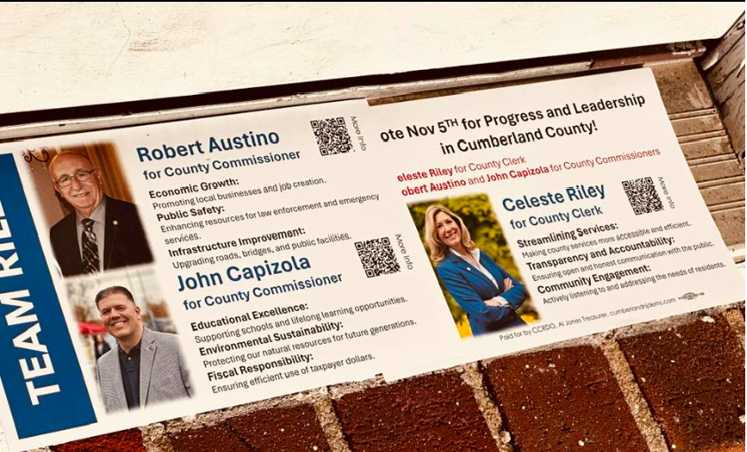

Celeste Riley
Running for:
Cumberland County Clerk
Incumbent
Challenger

Agenda
Current Agenda per facebook post
- Streamline services to make them more accessible and efficient
- Transparency and accountability to ensure open and honest communication with the public
- Community engagement through active listening and addressing the needs of residents
-
View Screenshot
If on desktop, right click the image and select 'open in new tab' for a larger image

PRIOR Agendas
- Investing in Higher Education to promote economic development
- Bringing jobs to high-unemployment areas
- Improve K-12 public education
- Promoting shared services and public-private partnerships to make New Jersey a more affordable place to live.
- The New Jersey Medical and Health Sciences Education Restructuring Act Act
- Social Justice Advocate
- Women's Rights Advocate
- Sponsored bills on Crime Victims rights, Financial Empowerment, domestic violence, gender pay gap, workplace discrimination
- Helped promote NJ's wine industry and was named "Legislator of the Year" by The Garden State Wine Growers
- Won "Person of the Year Award" from Salem County's Women's Services for domestic violence and sexual assault legislation
- Won "Citizen of the Year" award from Salem County Chamber of Commerce for economic development efforts
- Worked on "Building a Better Bridgeton" initiative, a community involved effort to clean up the city
party messaging
After reaching out to various members of the CumberlandNJ Dems, it is unclear how the Democrat party agenda specifically and currently applies to Cumberland County. However,
we might be able to infer the following things from last year's messaging:
- Support Senior housing and Healthcare Services.
- Provide county recreational advancements, building a county indoor sports facility and swim center and improving county recreation areas.
- Support state of the art correctional facility, by improving conditions and programs and drive long standing issues with facility to closure. Also wishes to reduce cost and tax burden of facility.
policy positions
After reaching out to Riley and receiving no response, it is unclear how any policy positions she may have relates to the office of County Clerk other than she
might be more inclined to push for Democrat policies and agendas in a Republican dominated county.
experience
- Current County Clerk, 2nd term
- Prior Assemblywoman, re-elected twice
- Higher Education Committee Chair
- Tourism and Arts Committee Vice-Chair
- Transportation, Public Works, and Independent Authorities Committee Member
- Agriculture and Natural Resources Committee Vice-Chari
- Health and Senior Services Committee Member
- Housing and Local Government Committee Member
- Both Bridgeton City Council Member and President